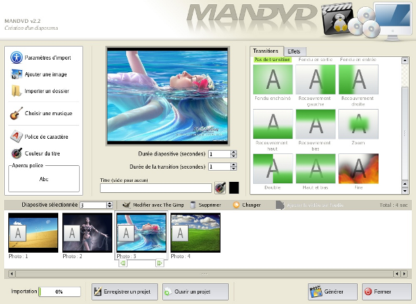
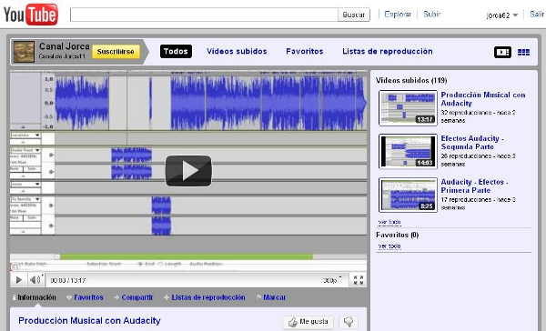

3.3. Post-producción (finalidad curso)
Una vez obtenidas todas las imágenes procedemos a realizar el montaje final. Para ello utilizaremos aplicaciones tales edición de video y sonido, quemadores de DVD y disposición de los mismos para su uso en webs.
-
Utilizando cualesquiera de los programas de edición de video (kino, kdenlive, lives, etc.) realizamos y aplicamos todos los efectos visuales y de sonido que lo hagan más actractivo.
-
Al finalizar el paso anterior debemos exportar dicho video en un formato universal (AVI, MPEG, MOV, etc.) y con un códec estándar (XVID, DIVX, MPEG2, etc.) y para un sistema de visión estándar (PAL, por ejemplo 25 fps).
-
Si el video es para uso interno debemos proceder a grabarlo (“quemarlo”) en un dispositivo físico (DVD o Video CD). Si deseamos grabar varios trabajos en un mismo dispositivo requerimos de aplicaciones tales como MANDVD o DVD Styler
 -
Si el video es para consulta, podemos utilizar el youtube, google video y otros sitios webs donde nos permite colgarlos y disponer de ellos para su acceso vía internet (distribucción).
 -
Otro aspecto interesante sería su difusión utilizando un servidor de streamer: Se trata de un servicio que posibilita la emisión por Internet o en LAN de contenidos multimedia o de vídeo y audio desde un equipo remoto equipado con cámara digital, webcam o conectado a una reproductor o mesa de mezclas. Esto permite un control, en lo referente a la difusión, y marcar el tiempo de emisión. A nivel educativo se podría, utilizando las Redes Locales de los centros educativos, para emitir contenidos didácticos multimedia como complemento a los contenidos clásicos.
Jo.R.C.A. 2004 - 2011

Edición de Audio y Video con Software Libre by José Ramón Cerdeira Alonso is licensed under a Creative Commons Reconocimiento-No comercial-Compartir bajo la misma licencia 3.0 España License